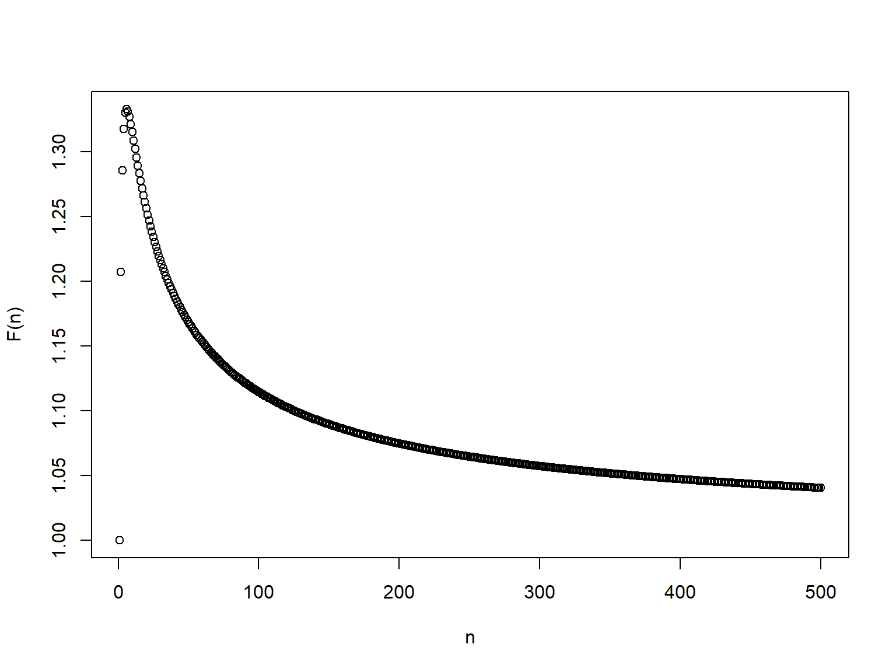

numerator <- function(N){
if(N==1){
return(1)
}
return(N^(1/N) + numerator(N-1))
}
fn <- function(N){
return(numerator(N)/N)
}Limits is fundamental in mathematics especially when dealing with scientific computing problem.
NoteDefinition (Limits)
Definition 1 (Limits) A function \(f\) defined on a set \(X \in \mathbb{R}\) has the limit \(L\) at \(x_0\), written
\[\lim\limits_{x \to x_{0}} f(x) = L\]
if for any \(\epsilon > 0\), there exists \(\delta > 0\) such that
\[|f(x)-L| < \epsilon\]
when \(0 < |x-x_0| <\delta\) AND \(x \in X\).
For instance, let say we have a function \(f(x) = \sqrt[x]{x}\), who knows the exact value of the function when \(x=2\) because its result is a real number with a never ending decimals? (\(\sqrt[2]{2} = 1.41421356...\))
And who knows that as \(x\to\infty\), the \(f(x) \to 1\) although it is not exactly \(1\)?
In fact, we will never know the exact value of such number and the best approach that we can take is to make an approximation. With Definition 1, this can allow us to at least approximate the result and continue further the calculation that we are doing.
Continuity is also an important concept in calculus because it enable us to find the rate change of any function in focus. Let say that at a certain point \(x_i\) with \(f(x_i)=\infty\), then the rate change of the function cannot be determined at that point \(x_i\) because \[\frac{f(x_i)-f(\Delta x)}{x_i - \Delta x}\] is not defined. We can say that any function is continuous if it fulfills the following criteria.
NoteDefinition (Continuity)
Definition 2 (Continuity) A function \(f\) defined on a set \(X \in \mathbb{R}\) is continuous if
\[\lim\limits_{x \to x_{0}} f(x) = f(x_0)\]
at each number \(x_0\) in the set \(X\).
Sometimes, a function can be made from a sequence of number. For instance, consider the sequence \(\sqrt[1]{1}, \sqrt[2]{2},\sqrt[3]{3},...,\sqrt[n]{n}\), we can build a function out of this sequence such as
\[f(n)=\frac{\sqrt[1]{1}+\sqrt[2]{2}+\sqrt[3]{3}+...+\sqrt[n]{n}}{n}.\] For situation above, knowing that the sequence converge to \(1\) can be really helpful since we can approximate as \(n \to \infty\), the limit of \(f(n) \to 1\). The following code snippet and image shows the value of the function as \(n \to \infty\).

In fact, the concepts of convergence/divergence for sequence are very similar and mostly used interchangeably with the concept of limit.
NoteDefinition (Convergent of a sequence)
Definition 3 (Convergent of a sequence) If \((x_n)\) is a given sequence, and if it is related to a number \(K\), in such a way that \[(x_n - K)\] forms a null sequence (where all elements in the null sequence approaching 0), then we say that the sequence \((x_n)\) converges to \(K\). The number \(K\) is called the limiting value of this sequence.
NoteDefinition (Divergent of a sequence)
Definition 4 (Divergent of a sequence) Every sequence in which is not convergent (because we cannot form a null sequence) is called divergent.
At its core, the idea of limits helps us make sense of values that can’t be perfectly known — only approached. Whether it’s finding where a function heads as it grows larger and larger, or figuring out if a sequence settles toward a single value, limits give us the language to describe “almost” and “getting closer.”
Once we understand limits, continuity becomes much more intuitive — it’s simply when a function behaves smoothly without sudden jumps or breaks. And when we talk about convergence, we’re really seeing limits in action through sequences that gradually stabilize.
These ideas might seem abstract at first, but they’re the foundation of calculus and modern scientific computing. Every derivative, every integral, and every numerical approximation starts here — with the simple yet powerful notion of approaching a value as closely as we want.
References
Konrad, Knopp. 1947. Theory and Application of Infinite Series. 2nd ed. Blackie & Son Limited.
L., Burden Richard, and Faires J. Douglas. 2011. Numerical Analysis. 9th ed. Brooks/Cole, Cengage Learning.